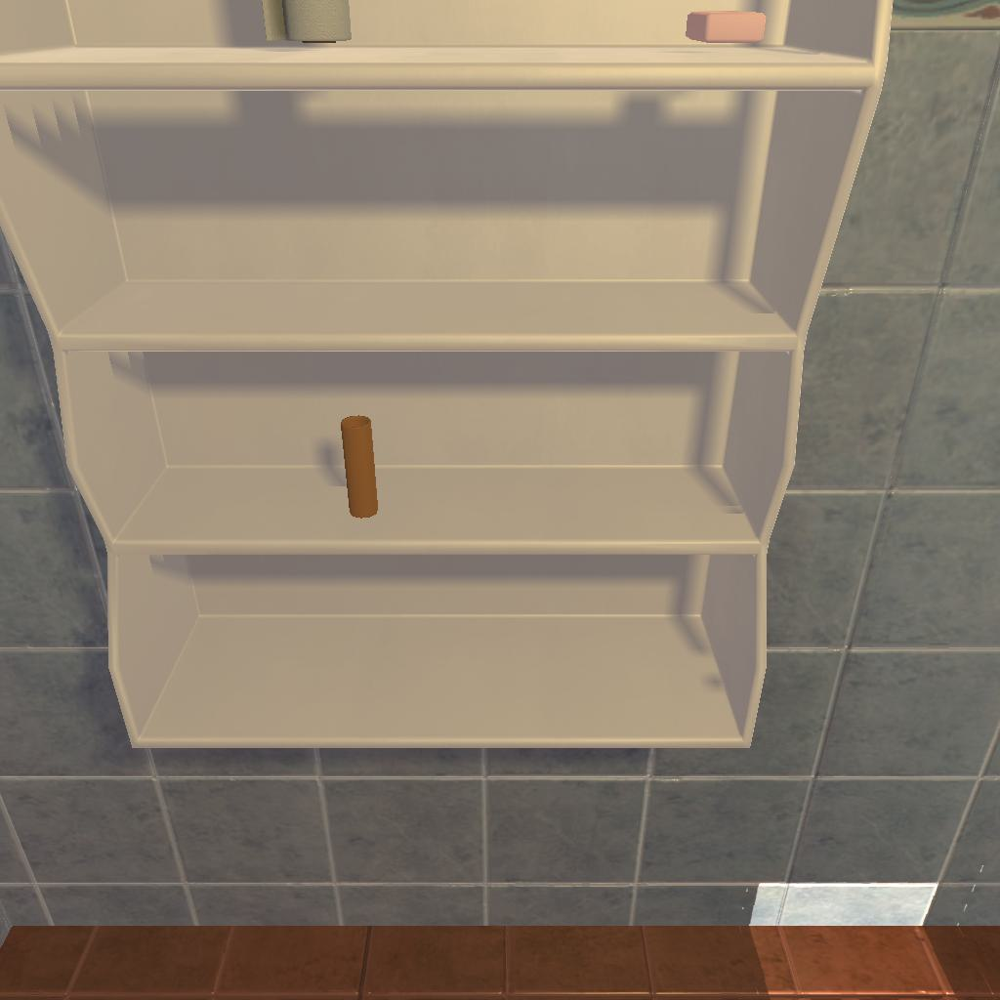

---------------------------------------------------------task: 25---------------------------------------------------------
--------------------------------------------------------------------------------------------------------------------------------------------------------------------
--------------------------------------------------------------------------------------------------------------------------------------------------------------------
Step:--------------------------------------------------------------------------8-------------------------------------------------------------------------------
----------------------------------------
VLM Prompt:
Image1:
Image2:
**Instruction**
1. Analyze the provided images to identify all visible household objects and compare the difference between images (e.h. whether the object is opened or not and taken on hand or not), focusing on those relevant to the task description "find two dishsponge and put them in cart."
2. Use the analysis of images and the task hint "The agent must find an object of the desired type, pick it up, find the correct location to place it, put it down there, then look for another object of the desired type, pick it up, return to previous location, and put it down there with the other object." to answer the question: what is the most reasonable action in the choices for the task description "find two dishsponge and put them in cart"?
3. Decide and write the answer using the template: The answer is: (i): , where i is the real number. If there is no desired object in images, search every place based on **Initial Observation** to find the object. And if no one is exactly correct, choose a similar answer.
**Initial Observation**
You are in the middle of a room. Looking quickly around you, you can see bathtub (1), bathtubbasin (1), cart (1), toilet (1), garbagecan (1), toiletpaperhanger (1), shelf (1-4), sink (1), sinkbasin (1), handtowelholder (1)
**Answer Choices**
(1): go to bathtub 1
(2): go to bathtubbasin 1
(3): go to cart 1
(4): go to toilet 1
(5): go to garbagecan 1
(6): go to toiletpaperhanger 1
(7): go to shelf 1
(8): go to shelf 2
(9): go to shelf 4
(10): go to sink 1
(11): go to sinkbasin 1
(12): go to handtowelholder 1
(13): take papertowelroll 1 from shelf 3
(14): take toiletpaper 1 from shelf 3
(15): take soapbar 1 from shelf 3
**Answer**
Let's think step by step by following the instructions.
----------------------------------------
----------------------------------------
Original Response:
1. In both images, we can see a shelf with three shelves. On the top shelf, there is a toilet paper roll (toiletpaper 1) and a pink soap bar (soapbar 1). On the middle shelf, there is a brown object (papertowelroll 1). The bottom shelf is empty. There is no visible dish sponge in either image.
2. Based on the task description "find two dishsponges and put them in cart," the agent needs to find dish sponges, which are not visible in the images provided. Therefore, the agent must search other locations mentioned in the Initial Observation to find the dish sponges.
3. Using the template provided, the answer would be: The answer is: (i): , where i is the real number. Since we do not see any dish sponges in the images, we need to search in other places. The most logical places to find a dish sponge would be near the sink or sinkbasin, as dish sponges are typically used for cleaning dishes or surfaces in a kitchen or bathroom setting.
The answer is: (11): go to sinkbasin 1.
----------------------------------------
----------------------------------------
>>> Refine Original VLM Response and Get Pure Action: No action
----------------------------------------
-----------------------------------------------------------------
Running time: 10.493510723114014 seconds
Total Money: 12.905230000000001
-----------------------------------------------------------------
-----------------------------------------------------------------
Text Observation:Nothing happens.
-----------------------------------------------------------------
UNSUCCEED